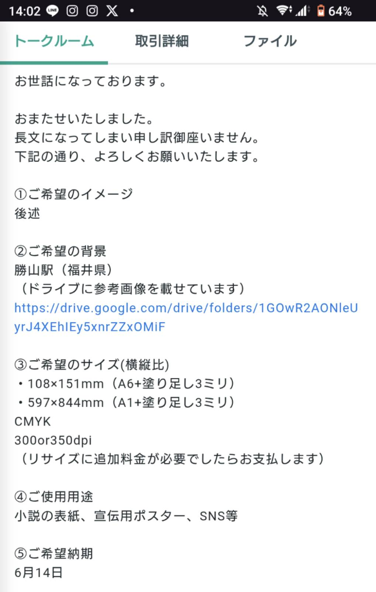
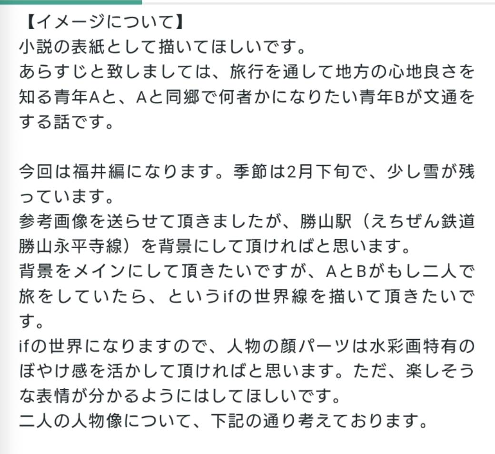
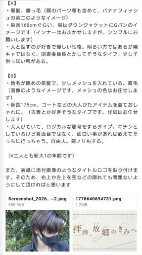
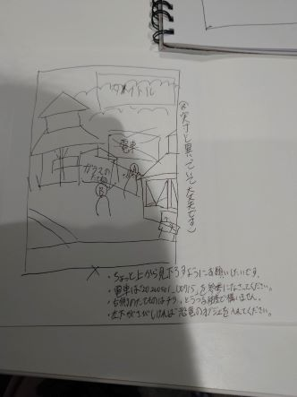
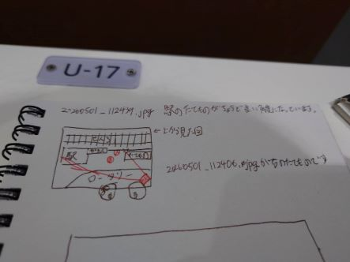

2026/04/17
私の小説をプロの人に読んでもらって課題点と強みを聞きました。
最初数か月間は発行する前に読んでもらおうと思います。
2026/05/01
表紙やSNSに載せるために写真を撮りに行きました。
福井は雨でしたが、AIに頼んだら晴らしてくれるのでいい時代だと思います。
また、福井で働いている友人と話したら、本を置かせてもらえそうな店を教えてもらいました。
友人が設立を手伝った会社で、本のセレクトショップだそうです。
2026/05/13
地方創生の活動をしている和歌山の友達と会いました。
来年和歌山を取り上げたいと思っているので、地元民におすすめの場所を聞きました。
今度案内をしてもらう約束をしました。
2026/05/07
ロゴをココナラで依頼しました。
ココナラを使うのは初めてなので、使い方も模索中です。
2026/05/14
表紙のイラストをココナラで依頼しました。
依頼する人の条件として、次の通りの人を探すのに時間がかかりました。
１，水彩画or色鉛筆風の画風の人（AI絵師は×）
２，二か月に一回の定期購入を二年間継続可能な人
３，2~3万円で依頼を受け付けている人
４，ヒアリングをしっかり行っている人
３について、料金の下限を設定しているのはある程度の品質を担保してもらうためです。
AI絵師が良くない理由も、意図せぬ現実との齟齬を防ぐためです。
（クリエイティブな分野において、過度なAIの使用は良くない印象をあたえますし、、）
また、表紙は大事な情報になるため、後日しっかりヒアリングシートを書きました。
ここはプログラミングの経験が役に立った気がします。
認識の噛み違いを起こさないため、個人の価値観に基づく言葉は使わないようにしました。



簡単な構図のスケッチも送りました。


まずラフが送られてくるようです。待ちたいと思います。
2026/05/15
ロゴが届きました
最初の依頼文で誤字を送ってしまい、一部作り直しになってしまいました。
追加料金は掛からなかったのですが、次から気を付けたいです
ちなみに「拝啓」を「背景」と誤字っていました。
また、「後で確認しよう」と思っていたのですが、ロゴのサイズと解像度を聞く前にトークルームをクローズしてしまいました。
ココナラは取引が終わるとデザイナーと話せなくなるのでやらかしです。最悪上からなぞってどうにか、、、
2026/5/29
6月まで何もすることがないのが落ち着かず、ココナラのイラストレーターさんの進捗が気になりました。
ラフが送られると言われてからもうすぐ二週間たつが大丈夫だろうかと連絡しようか迷いましたが、向こうにも生活がある上に他にも依頼を受けているのかもしれないと思い、まだ止そうと思います。
明後日の日曜日で納期二週間前になるので、そのタイミングで声かけようと思います。